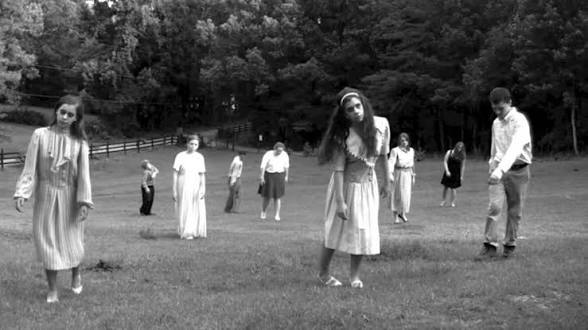

🧟♂️🧟♀️ Night Of The Living Dead (1968) — CERTIFIED MGC G-5

🏛 MGC LOWER COURT OF APPEALS
- ASSET TITLE: Night of the Living Dead (1968) – The Ancestral Black-and-White Ghoul Ledger
- OFFICIAL REGISTRY GRADE: Certified MGC G-5 (Good / Heavily Circulated Pioneer Alloy)
- LOWER COURT JURISDICTION: Judge Tina, Chief of Cult Classics
- CASE FILE: #088
📜 THE FORENSIC NARRATIVE BREAKDOWN & RECOVERY
Tina walks up 👢👢 to the steel bench, tosses a crumpled newspaper and an empty coffee cup into the trash can 🗑, and dials her 5x magnifying lens onto this grainy, heavily circulated 1968 black-and-white specimen.
1. Ancestral Pioneer Metallurgy vs. Heavy 1968 Circulation Wear
- Under a strict, objective numismatic review, George A. Romero’s Night of the Living Dead possesses undeniable historical eye appeal. As the foundational planchet that minted the modern flesh-eating zombie genre, it carries immense collector equity for horror historians.
- However, when stripped of 58 years of museum nostalgia and judged strictly against modern horror cinema, the specimen exhibits severe vintage wear. Shot on gritty, low-budget black-and-white film stock, the visual surface shows deep handling scuffs, stiff theatrical camera staging, and heavy pacing drag that stalls the narrative engine inside a single Pennsylvania farmhouse for nearly the entire runtime.
2. Severe Logic Corrosion & Uncalibrated Character Friction
- Under our 5x magnifying lens, the screenplay suffers from glaring structural defects. The plot logic frequently flatlines—instead of immediately securing the reinforced basement cellar, the characters spend over an hour endlessly arguing over a radio, shouting over a television broadcast, and nailing flimsy scraps of wood over ground-floor windows while slow-moving ghouls casually shuffle around outside.
- While Duane Jones delivers a grounded, authoritative performance as Ben that adds vital structural integrity to the coin, the surrounding cast exhibits noticeable 1960s melodramatic acting fatigue. The hysterical screaming loops and baffling, self-destructive decisions create constant narrative friction that caps the asset well below the Fine register.
3. The Definitive G-5 Zombie-Green Allocation
- Let the permanent registry reflect the unvarnished reality: mainstream film scholars treat this coin like an untouchable Mint State artifact, ignoring its clunky execution and nonsensical character behavior. At the same time, the MGC High Court refuses to drop it into the G-2/G-3 junk box or onto the PO-1 Basal State Floor, because its bleak, nihilistic final frame and genre-defining DNA still pack an unmistakable punch.
- It locks securely into the zombie-green registry at G-5—a rough, heavily circulated piece of horror history that earns its keep on historical grit alone!
⚖️ THE CHIEF’S FINAL DECREE
Tina grabs her heavy 12-inch crescent wrench and brings it down onto the cold steel bench with a deafening, echoing metallic ring! “They’re coming to get you, Barbara—and so is the 5x loupe! Let the ledger show that while the farmhouse logic leaks engine oil from start to finish, Romero struck the original mold that started it all!”
- 🔧💥 🧟♂️ Case Closed. Certified MGC G-5.

• © 2026 MOVIE GRADING CONSENSUS. All Sovereign Rights Reserved.